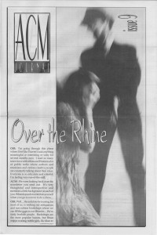

CMnexus
: Contemporary Christian culture, music, and media.
|
Over the RhineOn the cover
1992
ACM Journal | Media coverage:- 1992 in ACM Journal "Over the Rhine", by Tom D. Stephenson
- Jul 1993 in Syndicate "Wants Good Things", by Brian Quincy Newcomb
- Fall 1993 in Notebored "Over the Rhine"
- 1997 in Cornerstone "Interview: Over the Rhine (Linford Detweiler and Karin Bergquist)", by Tammy Perlmutter
- May 2000 in CCM "Ready to Roar: Lessons For Lambs", by Melissa Riddle
- 11 Jun 2001 in Christianity Today "Christianity Today Review: Three Chords and the Truth", by Steve Rabey
- Jul 2005 in Relevant "Spotlight: Over the Rhine", by Jewly Hight
- Jun 2007 in CCM "Salt and Light In A Gray World: Over the Rhine", by John J. Thompson
- May 2008 in Relevant "Over the Rhine", by Alecia Stephens
- Jun 2011 in CCM Digital "The Fringe: Over the Rhine", by Andrew Greer
- Sep 2011 in Prism "Music Notes: Broken and Scared", by Jesse James DeConto
- Sep 2013 in Relevant "...Leaves the Edges Wild", by Tyler Huckabee
Albums & reviews:1996: Good Dog, Bad Dog: The Home Recordings
1996: The Darkest Night of the Year
1999: Amateur Shortwave Radio
2002: The Cutting Room Floor
2004: Changes Come: Over the Rhine Live
2006: Snow Angels
2014: Meet Me at the Edge of the World
Books about Over the Rhine
- "Over the Rhine" in The Encyclopedia of Contemporary Christian Music (Mark Allan Powell, 2002).
- "Over the Rhine" in The Billboard Guide to Contemporary Christian Music (Barry Alfonso, 2002).
|
|
<>